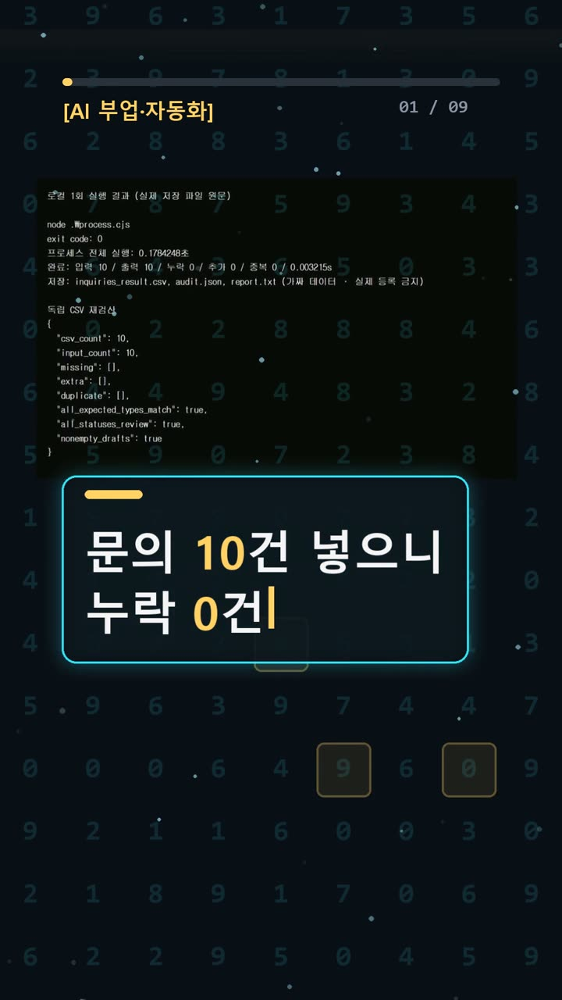
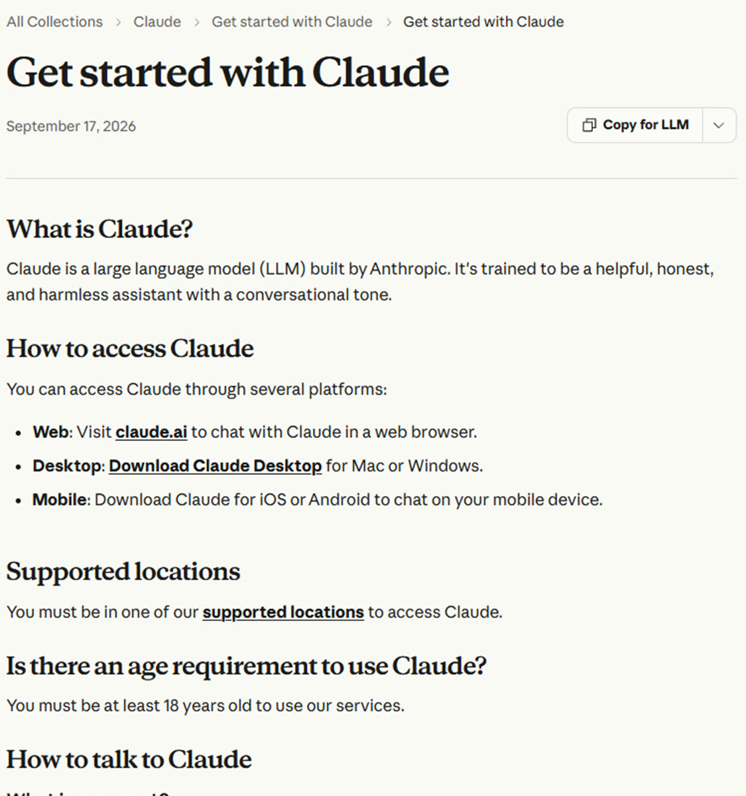
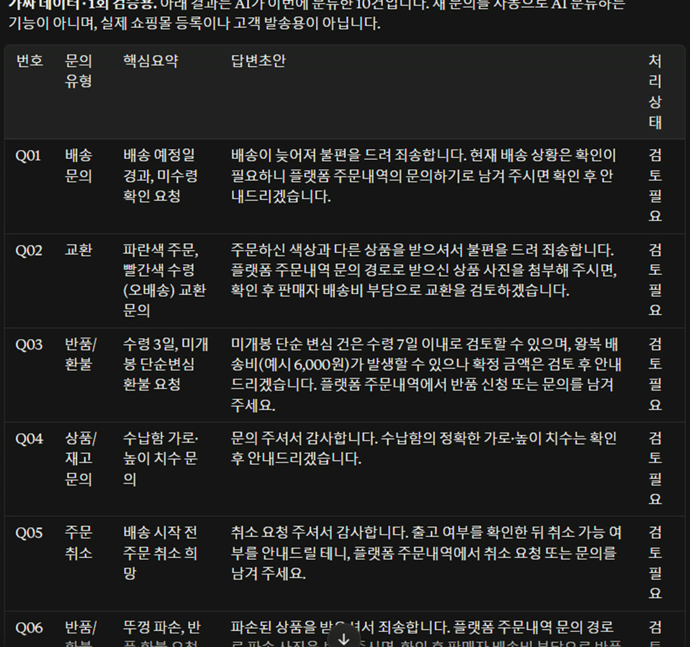
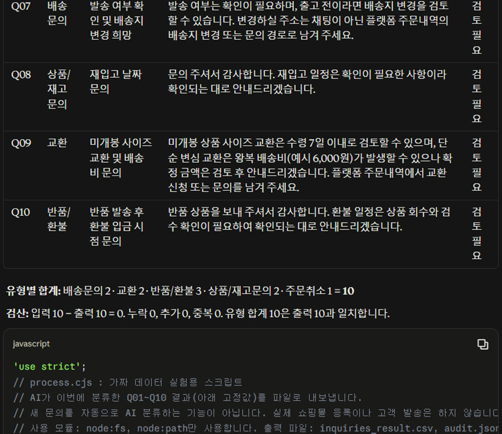

이 포스팅은 쿠팡 파트너스 및 토스쇼핑 쉐어링크 활동의 일환으로, 이에 따른 일정액의 수수료를 제공받습니다.
클로드로 고객 문의 10건 분류·답변 초안 만들고 누락까지 검산해 봤다

검증 범위 · 직접 확인 기록 · 이 글은 2026-10-21에 공식 출처를 열어 보고 우리 PC에서 직접 확인한 기록(확인 수준: partial)을 바탕으로 AI 도구와 함께 정리했습니다.
명령어·설정·실패 해결표 바로 보기 (무료 공개)명령어·설정·실패 해결표
| 구분 | 내용 | 해결 |
|---|---|---|
| 명령어 | node .\process.cjs | |
| 실패 해결 | 사용량 한도: '5-hour limit reached - resets [time]' 또는 'You've reached your weekly limit. It resets [day] at [time].'가 표시된다. | 공식 오류 안내에 표시된 이용 재개 시각을 확인하고 그때까지 기다린다. 이 안내에서는 결제·구독·usage credits 활성화를 해결 단계로 제시하거나 실행하지 않는다. |
| 실패 해결 | 입력 길이 초과: 'Your message will exceed the length limit for this chat. Try attaching fewer or smaller files or starting a new conversation.'가 표시된다. | 공식 문제 해결 문서대로 입력을 줄이거나, 내용을 작은 덩어리로 나누거나, 핵심 부분을 추려서 보내거나, 새 대화를 시작하는 방법을 참고한다. 실제 분할·전송·새 대화 실행은 하지 않았다. |
| 실패 해결 | 일시적 처리 용량 부족: 'Due to unexpected capacity constraints, Claude is unable to respond to your message. Please try again soon.'가 표시된다. | 공식 안내는 몇 분 뒤 재시도하라고 설명한다. 용량 부족은 서비스 장애와 다르며 상태 페이지에 표시되지 않을 수 있다. 실제 재시도는 하지 않았다. |
| 실패 해결 | 서비스가 전반적으로 이용 불가하거나 크게 저하된다. | 공식 문제 해결 문서는 https://status.claude.com 에서 확인된 장애의 범위·영향·복구 진행 상황을 확인하도록 안내한다. 이번 조사에서 현재 장애 여부를 판정한 것은 아니다. |
한눈에 보기
- 가짜 고객 문의 10건(Q01~Q10)과 실험용 가상 정책을 Claude 웹에 한 번 보냈습니다. 그 결과 분류·요약·답변 초안 표와 검산 코드를 받았습니다.
- 받은 코드를 그대로 실행하고, 결과 파일을 따로 한 번 더 검산했습니다. 10행 모두 있었고 누락·중복·추가는 0건이었습니다.
- 처음 목표였던 "20초 안에 완성"은 실패했습니다. 23.710초에도 Claude는 생각 중이었고, 표와 코드 전체가 끝난 건 88.035초 시점에 확인했습니다.
> 확인 수준: partial(일부 확인). 기능은 동작했지만, 20초 주장과 실제 쇼핑몰 자동 연동은 확인하지 못했습니다.
시작 전에 확인할 것
- 계정: Claude 계정이 있어야 합니다. 무료 버전도 있습니다. 공식 안내에 따르면 미국 기준 Pro 요금은 월 20달러이고, 지역이나 세금에 따라 달라질 수 있습니다. (Pro 플랜 안내)
- 무료 플랜 한도: 5시간마다 초기화되는 세션 한도가 있습니다. 보낼 수 있는 횟수는 수요 등에 따라 바뀝니다. (Get started with Claude)
- 우리 환경: Windows PC 브라우저였고, 이미 쓰던 계정을 그대로 썼습니다. 화면에는 플랜이 Max, 모델이 Opus 5.5 중간으로 표시됐습니다. 무료 계정의 속도나 모델은 시험하지 않았습니다.
- 지원 환경: 웹브라우저, Mac/Windows 데스크톱 앱, iOS/Android 앱이 공식 지원됩니다.
- 개인정보: 실제 고객 이름·연락처·주소·주문번호는 넣지 마세요. 저희도 가짜 문의만 썼습니다.
- 정책: 이번에 쓴 "7일·배송비 6000원"은 실험용 가상 정책입니다. 스마트스토어·쿠팡 공식 규정이 아닙니다.
- 자동 연동 아님: 사람이 문의를 직접 붙여 넣는 방식입니다. 쇼핑몰에서 문의를 가져오거나 답변을 등록하는 기능은 없습니다.
설치 방법
웹에서 쓸 때는 설치가 필요 없습니다. API 키(프로그램끼리 연결하는 비밀번호)도 필요 없어요.
1. 📄 공식 문서 기준 — 브라우저에서 claude.ai를 엽니다.
- 공식 문서 원문:
Web: Visit claude.ai to chat with Claude in a web browser. - 이게 보이면 성공: Claude 채팅 화면.
2. ✅ 직접 해 봄 — 검산 코드를 내 PC에서 돌리려면 Node.js(자바스크립트 프로그램을 PC에서 실행해 주는 도구)가 필요합니다. 저희 PC에는 원래 설치되어 있었고, 이번 실험에서 새로 설치하지는 않았습니다. 그래서 설치 과정은 이 글에 적지 않았습니다. 먼저 PowerShell에서 node --version을 입력해 버전이 나오는지 확인하세요. 버전이 나오지 않으면 Node.js를 따로 설치해야 합니다. 이 글은 설치 과정을 다루지 않습니다.
사용 방법
1. ✅ 직접 해 봄 — 가짜 문의 준비: 문의마다 Q01~Q10 고유 번호를 붙였습니다. 가상 정책과 함께 inquiries.json 파일로 저장했고, 요청 글은 prompt.txt에 남겼습니다. 2. 📄 공식 문서 기준(선택) — 문의가 파일에 들어 있다면 입력칸 왼쪽 아래 + 버튼 → Add files or photos → 파일 고르고 Open 순서로 첨부합니다. 끌어다 놓아도 됩니다. 영어 문서 표기이니 한국어 화면의 버튼 이름은 다를 수 있습니다. (파일 업로드 안내)
- 이게 보이면 성공: 파일이 채팅에 첨부된 상태.
3. ✅ 직접 해 봄 — 요청 보내기: 저희는 문의를 입력칸에 붙여 넣었습니다. 그리고 다음을 한 번에 요청했습니다.
- 문의 10행의 분류·요약·답변 초안·처리상태 표와 유형별 합계
- 번호(ID) 누락·추가·중복을 검사하고 CSV(엑셀로 열리는 표 파일)로 저장하는 Node.js 코드
- 이게 보이면 성공: 표와 코드가 담긴 답변.
4. ✅ 직접 해 봄 — 코드 저장: 받은 코드를 먼저 읽고 확인했습니다. 네트워크 접속, 외부 패키지, 파일 삭제, 다른 폴더에 쓰기가 없는지 봤어요. 그다음 한 글자도 고치지 않고 process.cjs로 저장했습니다. 5. ✅ 직접 해 봄 — 실행: PowerShell(윈도우에서 명령어를 입력하는 창)을 열고 실행했습니다.
cd C:\Users\내이름\Desktop\실험폴더 node .\process.cjs
- 이게 보이면 성공: 오류 없이 끝나고(exit 0)
inquiries_result.csv,audit.json,report.txt가 생깁니다.
6. ✅ 직접 해 봄 — 사람이 검수: 결과 파일을 열어 번호·건수·유형·초안·정책을 읽어 봅니다. 실제 답변 등록은 판매자가 확인한 뒤 직접 해야 합니다.
> 주의: 이 코드는 이번 10건 결과를 내보내는 용도입니다. 새 문의를 넣는다고 다시 분류해 주는 프로그램이 아니에요. 새 문의는 Claude에 다시 요청해야 합니다.

우리가 직접 해 본 결과
확인 수준은 partial입니다. 시간 순서대로 적어 볼게요.
1) 입력하다 한 번 막혔어요. 브라우저 자동 입력이 요청 글을 두 번 겹쳐 넣었습니다. 보내기 전에 발견해서 전체 선택 후 다시 넣었고, 실제 전송은 한 번만 했습니다.
2) 20초는 안 됐어요.
- 23.710초: 아직 생각 중
- 77.733초: 생성 중
- 88.035초: 표와 코드 전체가 완료된 상태를 확인
정확히 언제 끝났는지, 표만 만들 때는 몇 초인지는 재지 못했습니다. 원래 계획과 달리 코드까지 함께 요청했기 때문에 "표만 요청"과 비교할 수도 없어요. 88초를 일반적인 속도라고 보시면 안 됩니다.

3) 코드 실행 결과
node .\process.cjs1회, exit 0- 프로세스 전체 0.1784248초, 코드 안의 읽기·검산·저장 0.003215초
- 이 시간은 파일 처리 시간입니다. AI가 생각한 시간이 아니에요.
4) 따로 한 번 더 검산했어요. "입력 10 − 출력 10 = 0"만으로는 누락이 없다고 말할 수 없습니다. 같은 번호가 두 번 나오고 하나가 빠져도 10이 되니까요. 그래서 PowerShell Import-Csv로 CSV를 따로 읽었습니다.
- 10행, Q01~Q10 번호 전부 일치
- 누락 0 · 중복 0 · 추가 0
- 미리 정해 둔 기대 유형과 10/10 일치
- 빈 답변 0, 처리상태는 모두 "검토 필요"
- 유형별 합계 2+2+3+2+1=10

5) 단계 수 비교(참고용 가정): 손으로 하면 준비→건별 읽기→분류→요약→답변 작성→검산→내보내기, 7단계로 셌습니다. 이번 AI 경로는 준비→웹 요청→코드 저장→실행→결과 검수, 5단계였어요. 사람 작업 시간을 실제로 잰 건 아니라서 몇 배 빠르다고는 말할 수 없습니다.
확인하지 못한 것
- 문의 자동 수집, 실제 계정에서 답변 등록, 새 문의 자동 분류
- 이 소재를 처음 알려 준 X 글 두 개를 읽어 봤지만, 본문만으로는 "문의 10건·20초·템플릿" 내용을 확인하지 못했습니다.
시도는 1회, 문의도 10건뿐입니다. 다른 문의나 다른 플랜에서는 결과가 달라질 수 있어요. 프롬프트 원문과 결과는 AI 실험노트에 모아 두었습니다. 쇼츠 영상은 여기에서 볼 수 있어요.
자주 막히는 곳
출처는 모두 공식 오류 해결 문서입니다. 저희가 직접 겪은 건 아래 마지막 두 항목뿐이에요.
- 사용량 한도:
5-hour limit reached - resets [time]또는You've reached your weekly limit. It resets [day] at [time].→ 표시된 재개 시각까지 기다립니다. - 입력 길이 초과:
Your message will exceed the length limit for this chat. ...→ 입력을 줄이거나, 작게 나누거나, 핵심만 보내거나, 새 대화를 시작합니다. - 일시적 용량 부족:
Due to unexpected capacity constraints, Claude is unable to respond to your message. Please try again soon.→ 몇 분 뒤 다시 시도합니다. 상태 페이지에 안 나올 수도 있어요. - 서비스 전체 장애: status.claude.com에서 장애 범위와 복구 상황을 확인합니다.
- 그럴듯하지만 틀린 답: Claude를 유일한 근거로 삼지 말고 꼼꼼히 검토합니다. 표가 나왔다고 해서 누락 0건이 증명된 건 아니에요.
- 우리는 여기서 막혔어요 ①: 브라우저 자동 입력이 글을 두 번 넣었습니다. → 보내기 전에 입력칸을 꼭 확인하세요.
- 우리는 여기서 막혔어요 ②: 로컬 보고서 파일(file://)이 브라우저에서 권한 문제로 열리지 않았습니다. 권한을 바꾸지 않고, 결과 값을 읽기 전용 텍스트 화면에 띄워 캡처했습니다. 그래서 사진 4는 터미널 원본 화면이 아닙니다.
🧰 오늘의 실험실 생존 세트 — 밤새 실험 돌릴 때 쟁여 두는 것들


정리
- Claude 웹에서 가짜 문의 10건의 분류·답변 초안 표와 검산 코드를 한 번에 받을 수 있었습니다.
- 따로 검산해 보니 누락·중복·추가 0건, 기대 유형 10/10 일치였습니다.
- 다만 20초 완성은 실패했고(88.035초에 완료 확인), 쇼핑몰 자동 연동도 아닙니다. 답변은 반드시 사람이 검토한 뒤 보내야 합니다.
이 글은 실제 실험 기록을 바탕으로 AI 도구와 함께 정리했어요.
혹시 글에서 틀린 부분이나 고쳐야 할 부분이 보이면 유튜브·스레드 댓글로 알려 주시면 정말 감사하겠습니다. 바로 확인해서 고칠게요!
🛒 다시 보기: 오늘의 생존 세트
🎙️ AI 음성이 궁금하다면
우리 채널 내레이션은 타입캐스트를 쓰지만, 영어·다국어 AI 음성을 실험해 보고 싶다면 ElevenLabs도 많이 쓰여요.
[광고·제휴] ElevenLabs 둘러보기🎬 쇼츠로 다시 보기 · 🧵 함께 이야기하기
🧵 스레드 @alligatorxor에서 오늘 실험 이야기 나누기 · ▶ 유튜브 새AI실험노트 다른 쇼츠 보기 · 📒 실험노트 홈